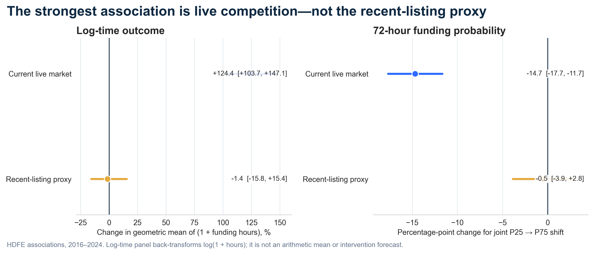
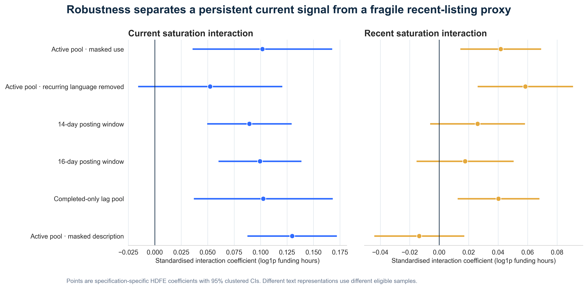

Narrative attention on Kiva — the full written report, in English.
English translation of
REPORT.md. All figures, confidence intervals and source citations are carried over unchanged; the Chinese original remains the version of record.
We split "slow funding" into two attention channels to be tested separately: current competition — the
same-sector loans live at this moment are both numerous and alike — and a recent-listing language proxy —
the same-sector loans that went live 35–65 days earlier are both numerous and alike. The second channel has no
observed impressions, page exits or memory, so it can only serve as a posting-age proxy for the wear-out
hypothesis. The main model uses 1,234,131 training loans from 2016–2024; the 133,409 loans in the 2025 main
sample are held out in time. [Source: outputs/model_sample_flow.csv, outputs/frozen_spec.csv]
The strongest result comes from the current environment. In the log(1 + funding hours) model, moving current
volume and focal-to-pool lexical overlap together from the training-sample P25 to P75 corresponds to a
124.35 % increase in the conditional geometric mean of 1 + funding hours (95 % CI 103.71 % to 147.08 %),
a ratio of 2.24. This is not an arithmetic mean funding duration. On the separate 72-hour co-outcome, the
probability of completing funding falls by 14.68 percentage points (95 % CI −17.69 to −11.67 pp).
[Source: outputs/scenario_contrasts.csv]
The recent-listing proxy does not produce a result of comparable strength: the joint P25 → P75 scenario is
−1.42 % on the same log-time back-transform (95 % CI −15.81 % to 15.43 %), and −0.51 pp on the 72-hour
probability (95 % CI −3.86 to 2.84). Both intervals cross zero, so the local V×G interaction cannot be
promoted into a robust average wear-out conclusion. [Source: outputs/scenario_contrasts.csv]
The 2025 holdout narrows the actionable boundary further. Adding the narrative features gives a log-hour MAE of
0.9822 against 0.9663 for controls only on the sample with a complete 35-day follow-up; the 72-hour Brier score
is 0.1370 against 0.1357 and AUC is 0.8921 against 0.8986. Log-loss improves slightly, from 0.4317 to 0.4301,
but not nearly enough to support deploying borrower scoring. [Source: outputs/holdout_validation.csv]
Recommendation: do not deploy the Narrative Attention Engine to score borrowers. Use current saturation as an experiment trigger, and test listing schedule / exposure diversification and partner-approved template alternatives first.
raisedDate < fundraisingDate are excluded. [Source: outputs/data_profile_summary.csv]raisedDate. The extract therefore cannot identify true right censoring
and does not support reading the outcome as "the probability of funding across all posted loans". What is
analysed here is the loans in the extract with an observed raisedDate.
[Source: outputs/status_raised_crosstab.csv]log(1 + funding hours), with 72-hour fast funding reported as a co-outcome. Records at
the end of 2025 with less than 72 hours of follow-up are excluded from the 72-hour evaluation.
[Source: outputs/followup_eligibility.csv]outputs/frozen_spec.csv]fundsLentInCountry, are excluded from the model. No output
contains names, precise locations or full narrative text.For each focal loan we compute two same-sector environments:
C = log1p(active same-sector count); H = mean cosine similarity between the focal
narrative and the active pool (focal-to-pool lexical overlap, not pairwise homogeneity within the pool).
Current saturation is the standardised C×H.V = volume of earlier loans within a posting-age window of [35, 65) days,
weighted with a 7-day half-life; G = mean similarity to that same weighted pool. Proxy saturation is the
standardised V×G. The main pool does not require the earlier loans to have finished, and there is no
lender exposure data; a completed-only lag pool is used as a sensitivity check.The primary text field is use, masked for names, locations, amounts and dates. TF–IDF uses hashed word
unigrams and bigrams (2^17 features) with smoothed IDF fitted on the training period only. 409 verbatim
five-grams appearing in at least 659 training documents and across at least 3 countries are defined as
recurring language. Because the data has no partner ID, "across countries" is only a proxy for shared origin
and cannot attribute language to any particular institution.
[Source: audit/stage2_text_manifest.json, outputs/boilerplate_like_phrases.csv]
Similarity is not computed by brute-force pairwise enumeration but through the exact identity
mean cosine = focal vector · mean pool vector. Across 600 checks — 200 focal loans × 3 pools — the maximum
absolute error is 2.909e-14 raw and 2.509e-14 residual, below the 1e-9 acceptance threshold.
[Source: outputs/pool_identity_summary.csv, audit/stage3_feature_manifest.json]
The P25/P75 joint scenario also passes a local support check: within a neighbourhood of ±0.10 IQR on both
dimensions, each current and recent endpoint has at least 4,716 real training records behind it. This check
only establishes that the scenario endpoints are not hollow extrapolation; it does not establish
exchangeability or causal identification. [Source: outputs/joint_support_summary.csv]

The main HDFE model controls for loan amount, borrower count, repayment term and platform 7-day listing
volume, and absorbs country, activity, week, gender, repayment interval and posting day/hour fixed effects.
Standard errors are two-way clustered on country and week. The C×H coefficient is 0.1017
(95 % CI 0.0357 to 0.1677, p = 0.003308). [Source: outputs/rq1_main_table.csv]
The substantive reading uses the full joint scenario rather than translating the interaction coefficient into
a percentage on its own: moving current volume and focal-to-pool lexical overlap together from P25 to P75
corresponds to +124.35 % in the conditional geometric mean of 1 + funding hours and −14.68 pp in the
72-hour probability. The first is not an arithmetic mean funding duration, and both are conditional
associations in observational data — not intervention forecasts for a redesigned Kiva.
[Source: outputs/scenario_contrasts.csv]
On raw masked use, C×H is 0.1017 (p = 0.003308); with recurring language removed it is 0.0523 (p = 0.129).
The estimate roughly halves and no longer reaches conventional significance — but this does not mean
"templates explain half of it", because the difference between the two coefficients has not been put through a
formal cross-model difference test. [Source: outputs/robustness.csv]
The description sensitivity provides complementary evidence: on masked description, C×H is 0.1298
(95 % CI 0.0875 to 0.1721, p = 1.663e-07) while V×G is −0.0136 (95 % CI −0.0441 to 0.0170, p = 0.376). The
identity check over 50 focal loans × 2 pools has a maximum error of 1.721e-15, passing the 1e-9 standard.
[Source: outputs/description_robustness.csv, audit/description_robustness_manifest.json]
The managerial implication is not to ask borrowers to "tell it louder", but to test the platform's and the lending partners' templates, scheduling and exposure processes.
The raw V×G coefficient is 0.0417 (p = 0.003658) and the residual is 0.0585 (p = 0.0007078). But these
coefficients test the conditional interaction of a posting-age proxy. The joint P25 → P75 scenario includes
V, G and V×G together, and its log-time back-transform is −1.42 % with a confidence interval that
crosses zero. [Source: outputs/robustness.csv, outputs/scenario_contrasts.csv]
At the same time, current C×H stays positive and significant under both 14-day and 16-day posting windows,
while lagged V×G is not significant in the time-based specifications. The current result is therefore robust
to the window choice but sensitive to text decomposition, and the recent result is not strong enough to
justify prioritising a wear-out editorial intervention. [Source: outputs/robustness.csv]

Year-specific scenario contrasts across 2016–2024 show both channels fluctuating substantially, and global
heterogeneity screens on year, sector and country all indicate differences. [Source: outputs/rq3_year_effects.csv,
outputs/rq3_global_tests.csv, outputs/rq4_sector_global_tests.csv, outputs/rq4_country_global_tests.csv]
These results stay exploratory. Country heterogeneity covers only the 15 countries with the highest training volume, and the sector models cover the 14 sectors that meet the estimation threshold. Many subgroup confidence intervals are wide, and the global Q screen does not estimate the cross-group covariance induced by shared week shocks. The report therefore does not pick a "best country" or "best sector" out of a ranking, and certainly does not use heterogeneity for borrower targeting.
On the 123,489 loans in 2025 with at least 35 days of follow-up, log-hour MAE is 0.9663 for controls only
against 0.9822 with narrative features; hour MAE is 168.28 against 168.61.
[Source: outputs/holdout_validation.csv]
On the 72-hour evaluation, Brier is 0.1357 against 0.1370 and AUC is 0.8986 against 0.8921; log-loss is 0.4317
against 0.4301. We did not compute paired uncertainty for these metric differences, so the accurate statement
is that the narrative model did not beat the baseline on the main operational metrics — not that it is
significantly worse. [Source: outputs/holdout_validation.csv]
Calibration still shows visible gaps across several gender and sector subgroups. These diagnostics are
guardrails only and cannot be a basis for protected-group targeting. [Source: outputs/fairness_diagnostics.csv]
The two most important next questions: how much of the current association survives once real exposure and ranking logs are added, and does randomly changing the listing mix actually improve funding speed without diverting attention away from other disadvantaged borrowers?
notebooks/S0_prepare.ipynb through notebooks/S6_engine.ipynb.src/. Execution order is in RUNBOOK.md.outputs/scenario_contrasts.csv, outputs/robustness.csv, outputs/holdout_validation.csv.figures/ and figures/source_data/.audit/, logs/run_log.txt.Version note: this report is written from the full real outputs. The runbooks and prompts in the appendix are early team source material only; the saved code, audit trail and frozen specification govern what was actually executed.